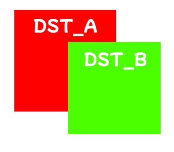
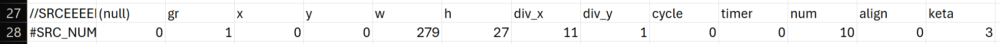

Basic Definitions
Basically speaking, rendering sprites in LR2 follow 3 simple steps:
Else the game will NOT render the sprite in-game at all!
Even though you can technically just create a comment line using no prefix syntax at all, it's better to start those lines with // (two slashes)
Basically speaking, rendering sprites in LR2 follow 3 simple steps:
- Starting from a #IMAGE file,
- Cut out a portion(or whole) from the #SRC_XX definition,
- Render the cut-out portion to the screen from the #DST_XX definition.
Else the game will NOT render the sprite in-game at all!
Trust me, I have been there.
The game picks up the definitions from #SRC_XX and #DST_XX, and ignores everything with a different starting syntax.Even though you can technically just create a comment line using no prefix syntax at all, it's better to start those lines with // (two slashes)
#SRC_IMAGE and #DST_IMAGE is the most commonly used definition and is also the base for the DST definitions of almost all others, so it's safe to use the arguments tfor other definition types.
#IMAGE
The #IMAGE definition is used to reference an image file in the skin.
Up to 100 can be defined for one single .csv file (?)
Starting from the topmost-defined one, the gr value is assigned starting from 0 automatically. It's common practice to comment the gr number of a file on the same line as the #IMAGE definition, for easy reference later.
Generally, it should look something like this:
Which correspond to these files in the skin folder:
The #IMAGE definition is used to reference an image file in the skin.
Up to 100 can be defined for one single .csv file (?)
Starting from the topmost-defined one, the gr value is assigned starting from 0 automatically. It's common practice to comment the gr number of a file on the same line as the #IMAGE definition, for easy reference later.
Generally, it should look something like this:
Which correspond to these files in the skin folder:
Example
For example, the gr value used for number.png is 1:
And the button.png file, which is defined fifth, has the gr value of 4:
For example, the gr value used for number.png is 1:
And the button.png file, which is defined fifth, has the gr value of 4:
#SRC_IMAGE
We will use image.png as an example.
The explaination for each setting is as follows:
| Setting | Description |
|---|---|
| (NULL) | Depending on the definition type, it is index. Those will be covered later. Usually is at 0. |
| gr |
Image group number, starting from 0. This is used to reference the
image in the #DST_XX definitions.
Special gr values:
|
| xywh |
Specify the starting coordinates and it's crop width and height.
Depending on the software you're using, when the sprite you want to implement is selected, it should display its coordinates and size. You can set wh to -1 if you want to use the entire image file. I guess you can set only w or h to -1, but the applications for that is not much |
| div_x div_y |
Specifies the horizontal and vertical divisions of the image
sprite. It is used for animations, NUMBER or BUTTON definitions, among other special ones. For example, if you have a sprite that is divided into 4 horizontal sections, you would set div_x to 4, and the game will intepret as 4 frames of an animation (T -> E -> S -> T). |
| cycle |
Specifies the total time for each animation cycle. When the number
defined is reached, the animation is completed and starts again at
the first frame. The time for each frame is cycle divided by (div_x * div_y), measured in miliseconds. |
| timer | Specifies the timer in which the image definition is used, e.g. a judgement hit timer, health-up timer, etc. |
| op1-3 | It is unknown that if these even works, but it is speculated that they are used for conditions in which the sprite will be displayed. |
#DST_IMAGE
The #DST_IMAGE definition is used to paste the sprites in-game.
| Setting | Description | |||||||||
|---|---|---|---|---|---|---|---|---|---|---|
| (NULL) | Index of the definition, same as in SRC. Uaually 0 unless otherwise specified. | |||||||||
| time |
Specify the time in miliseconds when the DST condition is met.
This is usually used in transitions/animations, which requires multiple lines of DST in the same sprite definition. Some examples will be shown later. |
|||||||||
| xywh |
The pasting destination in the LR2 window. Usually it is kept within the 640x480 canvas (LR2 Vanilla) or 1280x720 (LR2 HD Patch) or 1920x1080 (LR2 FHD Patch). But you can technically set it to any coordinates, even outside the canvas (or even negative coordinates), but it will not be visible in-game. This is useful for off-screen animations, commonly used in most skins. As for the width and height, it is usually set to the same as the SRC definition for 1:1 rendering, but it can be set to any size, even larger than the SRC definition. It is also possible to set the w and h values to negative values, which will change the anchor point of the sprite to the bottom-right corner instead of the top-left corner. |
|||||||||
| acc |
Sets the acceleration of the DST transition. This only changes how it accelerates, and doesn't change it's playback speed. acc values:
|
|||||||||
| a |
Sets the transparency of the sprite. The blend must be non-zero in order for the transparency to work. |
|||||||||
| rgb |
Sets the color of the sprite. The game will apply the color to the
sprite, and it can be used to change the display color of the
sprite.
Do note that if the selected sprite is black, the rgb value will not change the color of the sprite, as it is already black. |
|||||||||
| blend |
Sets the blending mode of the sprite.
The blend must be non-zero in order for the transparency to work. Blend values:
|
|||||||||
| filter | Value to specify if the sprite scaling blurs it as the wh values are enlarged. 0 to disable, 1 to enable. | |||||||||
| angle |
Sets the rotation angle of the sprite in degrees.
The rotation anchor is set to be the center value, and by default if it's 0 it will pivot around the center of the sprite. |
|||||||||
| center |
Sets the center point of the sprite for rotation.
The center point is set to be the center of the sprite by default, but it can be set to any point in the sprite. Each number from 0-9 represents a point in the sprite, starting from the top-left corner and going left-to-right:
|
|||||||||
| loop |
Sets the time the animation will start its loop in the animation
between multiple DST definitions. If the time is set to 0, the animation will loop back to the first frame immediately. If the time is set to -1, the animation will not loop at all and display the last frame of the animation. If the time is set to a non-zero value, the animation will loop back to the first frame after the specified time. Note: If the time is set to a value greater than the cycle time, the animation will not display at all! Also, the loop value and each value on the right of this vlue is only taken from the topmost DST definition. |
|||||||||
| timer | Same as SRC mostly. The animation will start at time=0 when the timer is activated. | |||||||||
| op1-3 | Specifies the conditions in which the sprite will be displayed. You can use - or ! in front of the number to indicate a NOR logic, which will apply the sprite if the condition of that option isn't met. | |||||||||
| op4 | A designated DST option for the turntable sprite. Usually is set to 0 for most sprite.
|
Display priority
The display priority of the DST definitions is determined by the order in which they are defined in the .csv file. The later a DST is defined in the .csv fine, the higher its display priority is.Take a look at the example below:

Here, the example above is achieved with DST_B defined after DST_A.
Other generic definitions
There are other definitions that follow the same pattern as #SRC_IMAGE and #DST_IMAGE, but are used for different purposes. You can use as many as you want.
Do note that the DST of these definitions are ommited as it is the same as the #DST_IMAGE definition.
#SRC_NUMBER
Numeric definitions. This can be used for scoring, judgement count display, or even the current time.

| Setting | Description |
|---|---|
| (NULL) | Index of the definition, same as in #SRC_IMAGE. Leave at 0. |
| gr |
Image group number, starting from 0. This is used to reference the
image in the #IMAGE definitions. In this example, 1 is used since the gr value of number.png is 1. |
| xywh |
It is the same as in #SRC_IMAGE, but it is used to specify the
size of the entire number sprite. Then you must use the corresponding div number to specify how many digits the number sprite can use. |
| div_x div_y |
The product of div_x and
div_y must be the multiples of the
following:
|
| cycle | Specifies the total time for each animation cycle. When the number defined is reached, the animation is completed and starts again at the first frame. Same as in #SRC_IMAGE. |
| timer | Specifies the timer in which the image definition is used, e.g. a judgement hit timer, health-up timer, etc. Same as in #SRC_IMAGE. |
| num |
Specifies the number to be tracked and displayed. Check the
Numbers tab for the available numbers. |
| align |
Specifies the alignment of the number sprite. In Lunatic Rave 2, the alignment will also change the anchor point of the number display depending on the keta value. Alignment values:
|
| keta |
Specifies the number of digits to be displayed. If the current value is less than keta, the sprite will display a trailing zero if the div_y value is 11. If the div_y value is 24, it will display a plus/minus sign depending on the value. Depending on the value of align, the anchor point of the number display will change:
Note: The keta value does not count the plus/minus sign, so you must add 1 to to the keta value to display the right amount of digits. |
#SRC_SLIDER
Slider definitions. This is used for adjusting parameters in the game, such as volume, speed, and other settings by clicking and dragging the slider.
| Setting | Description |
|---|---|
| (NULL) | Index of the definition, same as in SRC. Doesn't really accept values other than 0. |
| gr |
Since slider.png is used, the gr value is 2.
Change to the desired slider sprite. |
| xywh |
The size of the slider sprite. Note: this is the entire sliding part, not the frame of the slider. The wh values can be set to -1 to use the entire image file. |
| div_x div_y |
The number of frames in the slider sprite. Usually it is set to 1 unless you want to use an animation for the slider. |
| cycle | Specifies the total time for each animation cycle. When the number defined is reached, the animation is completed and starts again at the first frame. Same as in #SRC_IMAGE. |
| timer | Specifies the timer in which the image definition is used. Same as in #SRC_IMAGE. |
| muki |
Specifies the direction of the slider in which the slider moves.
|
| range |
Specifies the range of the slider. The slider will move from x to the (range + x), where x is the x value. Duh. Note: If you're using the slider for adjusting the volume, keep in mind that the range is split to 101 steps from 0-100 instead of 100. |
| type |
Specifies the type of the slider. Definitions can be found in the Numbers tab. |
| disable |
Specifies if the slider can be changed via mouse. If set to 1, the slider will be disabled and cannot be changed. If set to 0, the slider will be enabled and can be changed. |
#SRC_BARGRAPH
Draws bar charts. Usually used for displaying the health bar, or the score bar.
It is similar to the pacemaker graph on the right in IIDX.
| Setting | Description |
|---|---|
| (NULL) | Index of the definition, same as in SRC. Doesn't really accept values other than 0. |
| gr |
Since bargraph.png is used, the gr value is 3.
Change to the desired bar graph sprite. |
| xywh |
The size of the bar graph sprite. Note: the wh values in #DST_BARGRAPH is used for when the bargraph is 100% full. |
| div_x div_y |
The number of divisions in the bar graph sprite. Same as in #SRC_IMAGE. |
| cycle | Specifies the total time for each animation cycle. |
| timer | Specifies the timer in which the bargraph definition is used. |
| type | The type of the bar graph. Definitions can be found in the Numbers tab. |
| muki |
Specifies the rise direction of the bar graph.
|
#SRC_BUTTON
Button definitions. The buttons are used for changing play options, selecting functions, and changing various settings.
| Settings | Description |
|---|---|
| (NULL) | Usually the value is 0. Same as in #SRC_IMAGE |
| gr |
Image group number, starting from 0. This is used to reference the
image in the #IMAGE definitions. In this example, 4 is used since the gr value of button.png is 4. |
| xywh |
The size of the entire button sprite. Depending on the button definition you're using, different amounts of divs needs to be set in order to display its value correctly. |
| div_x div_y |
The number of frames in the button sprite. The number of frames is determined by the type of the button definition. Note: It is highly recommended to set either div_x or div_y to 1, as it is unconfirmed that the definitions will be read correctly. |
| cycle | Specifies the total time for each animation cycle. When the number defined is reached, the animation is completed and starts again at the first frame. Same as in #SRC_IMAGE. |
| timer | Specifies the timer in which the image definition is used. Same as in #SRC_IMAGE. |
| type | The type of the button. Definitions can be found in the Numbers tab. |
| click |
Specifies if the button can be clicked. 0 to disable, 1 to enable. If the value is 1, press on the left half of the button to decrease the value, and on the right half to increase the value. |
| panel |
Specifies which panel displays the button. Possible values ranges from 1 to 9, or -1 for when all panels are off and 0 if the button is visible everywhere. |
| plusonly |
Specifies if the button value can only be incremented. 0 to disable, 1 to enable. Note: If the value is set to 1, you can click anywhere in the button definition. |
#SRC_ONMOUSE
Allows the display of an alternative sprite when the mouse is hovering on that sprite.
| Settings | Definitions |
|---|---|
| (NULL) | The value here is 0. How many times do I have to repeat this? |
| gr | Since we're gonna use onmouse.png, in this example it's 5. |
| xywh | The size of the sprite. |
| div_x div_y |
The number of frames in the sprite. Usually it is set to 1, but you can use an animation for the sprite if you set it to other than 1. |
| cycle | Specifies the total time for each animation cycle. When the number defined is reached, the animation is completed and starts again at the first frame. Same as in #SRC_IMAGE. |
| timer | Specifies the timer in which the image definition is used. Same as in #SRC_IMAGE. |
| panel | Specify which panel can the onmouse definition be used. Same as #SRC_BUTTON. |
| x2y2w2h2 |
The coordinates and size of the alternative sprite when the mouse
is hovering on it. The values are relative to the original sprite. |
#SRC_TEXT
Text definitions. This is used for displaying text in the game, such as the song title, artist name, and other text.
Do note that if the text string is longer than the w value, the text will be condensed to fit the width of the text box.
| Settings | Description |
|---|---|
| (NULL) | The value here is 0 |
| font | Fundamentally, it is the same as gr value, but it is counted for each #LR2FONT definition. |
| st | Specifies which text to display. Check Numbers tab for the available text strings. |
| align |
Specifies the alignment of the text. Alignment values:
|
| edit |
Specifies if the text can be edited. 0 to disable, 1 to enable. If the value is 1, the text will be editable in-game, and the user can change the text by clicking on it. |
| panel |
Specifies which panel can the text definition be used. Possible values ranges from 1 to 9, or -1 for when all panels are off. |